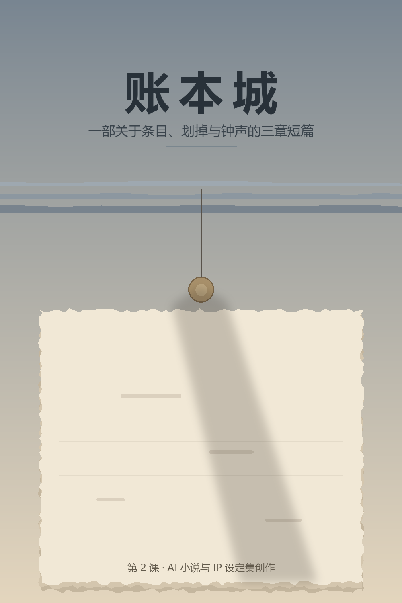

这本书讲什么
账本城不用钱，只用「条目」：每写下一条，就必须划掉另一条。东街的记录员沈砚每天给公共账册换页，某天他发现昨日最后一格本该有条目，纸面却是空的。他袖口里那半片撕角旧纸，只剩半个「木」字。
一个只会抄写的人、一个从不摘手套的守钟人、一个只在周五傍晚出现的学徒，被同一页纸牵到一起。这一周周五傍晚，旧钟楼的钟响了一次——城里只有一个人做了不可撤回的选择。
怎么读
- 左侧目录切换章节；每章末尾有「本章状态登记」（人物位置、随身道具、时间点）。
- 顶部检索框可查 25 条索引，回车即跳到附录对应条目并高亮。
- 另有《世界观设定集》《连续性校对表》《IP 商业化与销售》《制作说明》四个附录页。
第一章 换页
一 · 东街（周一清晨）
周一清晨，东街的长桌被抬回原位。桌面上还留着抹布拖过的水痕，顺着木纹往下淌了半寸，停住。沈砚把公共账册的新一页铺平，四个角依次按下去。纸背有点潮，按一下，留一个浅浅的指印。
他今天走得比平时慢。腰上的铜钥匙敲着胯骨，一下，一下。走三步响两声，第四步他停下来，等那一声响完再走。
昨日那一页的最后一格是空的。不是没写，是干净。没有墨，没有划痕，连指印也没有。纸面平得像刚被人从上到下压过一遍。
「换页了。」长桌那头有人说。
「换了。」沈砚把铜尺摆正，压在纸的上沿。
那人走过来两步，手插在袖子里，低头看那一格。「昨天最后一条呢。」
「写了。」
「写的什么。」
沈砚没有答。他把铜尺往前挪了一寸。纸角翘起来，露出下面压着的一小片纸。毛边，是撕下来的，不是剪的。上面只剩左边半个字，一个「木」，右边是空的。
他把它捏起来，对着窗口的光看。纸很薄，能透出后面的木纹。折痕是旧的，压过不止一次，折线已经发白。
他把纸折成两折，塞进袖口，再写今天的一条。笔尖压下去，纸上留下一行：东街换页，昨日最后一格是空的，我没有补。写完他数了一遍，连标点二十一个字。墨还没有干，指腹一碰就散开一点。
「明天见。」长桌那头的人已经收好笔，往街口去了。
「明天见。」沈砚说。
他等到人影看不见了，才把袖口里的那片纸又摸出来，摊在掌心，看那半个「木」。铜钥匙垂在一边，碰到桌沿，响了一声很轻的金属音。他没有去扶。
二 · 纸街（周二下午）
纸街的墙是纸叠起来的。一层压一层，边角全卷了。风从街口灌进来，整面墙响一下，又停住。
阿桉在墙下理上周的条目。她把纸一张一张摊平，用一把钝口纸刀压住角，再从边上撕下一条窄边。撕得很慢，慢到能听见纸断开的那一声。
「这是存根。」她把窄边在指间过了一下，「抄过什么，留一条做凭。」
沈砚看着她手上那一条窄边。边是毛的，宽度和她围裙口袋露出的那一角一样。
「上周的条子，你理到哪儿了。」沈砚站在她旁边，没有坐。
「周三。」她说话前先停半拍，眼睛不离手上的纸。
「周三有一条是我写的。」
「我知道。」
「那条不见了。」
「不见的不止一条。」她把撕下来的窄边对齐，摞在左手边。
沈砚看着那一摞窄边。一样宽，一样长，边上是毛的，和她围裙口袋露出的那一角一样。
「你抄过别人的条目没有。」
纸刀停在半空。「抄过一次。」
「抄的谁的。」
「不说。」
「什么时候。」
「上周。」她把纸刀放下，手在围裙上擦了一下，留下两道浅灰。
「抄一次要占掉什么。」沈砚问。
「占掉我那天唯一的一条。」她终于抬头，「我每天都写同一条，写我自己的名字。抄别人的日子，我就写不成。」
沈砚没有再问。他往后退了半步，鞋跟碰到墙脚，纸墙又响了一下。
阿桉低头继续理她的条目。理到第三张的时候，她从围裙口袋里把那一角纸掏出来，看了一眼，又塞回去，动作很快，像在藏一件早就说好要还的东西。
三 · 钟楼街（周三上午）
钟楼街早上没有人。影子从旧钟楼那头铺过来，一直铺到街心，压过石板之间的缝。
钟叔在擦钟。他戴着手套，一只手扶着钟摆，一只手拿布，从上往下擦。钟摆不动。布擦过去，铜面上留下一道亮，很快又暗回去。
「钟为什么停着。」
「不是停。」
「那是什么。」
「有人让它停。」钟叔没有回头。
沈砚往前一步。手套很旧，指头那里磨得发亮，像被握了很多年。
「停在什么时辰。」
「你知道了也没用。」
「我想知道。」
钟叔停下手里的布。他侧过头，看了看沈砚的袖口。那只袖子比另一只沉一点，垂下来的时候，口子上有一道折。
「那半张不是你的。」
沈砚把袖子往下拉了拉。「在我账册里。」
「纸不是你的。」钟叔把布叠成方块，塞进口袋，「字也不是。」
他说完就低下头继续擦。铜面上那道亮留了很久，没有再暗下去。沈砚站在原地等了一会儿，钟楼里什么声音也没有，指针没有动，三点十七分被锈咬住。
本章状态登记
| 人物 | 章末位置 | 随身道具 | 时间点 |
|---|---|---|---|
| 沈砚 | 钟楼街，钟楼下方三步 | 铜钥匙（腰间）、半片毛边旧纸（袖口内）、铜尺（留在东街长桌） | 周三上午 |
| 阿桉 | 纸街，纸墙下 | 钝口纸刀、撕角存根（围裙口袋） | 周二下午（本章最后一次出现） |
| 钟叔 | 钟楼街，钟楼内梯口 | 旧手套（未摘下）、擦布 | 周三上午 |
| 小满 | 未出场（周五才出现） | — | — |
本章字数
汉字 1230 个；连标点非空白字符 1492 个；台词 37 处（脚本核对，见 12_制作说明.md）。
第二章 排队
一 · 东街（周四清晨）
周四清晨，长桌上多了一层薄灰。沈砚把袖子挽到肘上，先掸了一遍桌角，才翻开账册。
昨天那一格有字。今天这一格是空的。
他把笔尖蘸了墨，写下第一行：谁抄走了我那条。
写完他看了一会儿。墨迹慢慢吃进纸里，边沿先深，中间浅。他又蘸了一次墨，笔尖悬在第二行的位置上。
他知道规矩。他也知道第二行落下去会发生什么。
笔尖落下去，他写了两个字：我不。
第一行开始退。不是被擦掉，是往里退，像水渗进更深的纸层。他伸手去按，指腹按在那句问句上，墨从指缝下面散开，散完就没了。纸上只剩淡淡一层水痕，形状像一条被压平的河。
第二行留着：我不。
他坐着没有动。三个月前也是这样。那天他写下「我想知道钟为什么停」，第二天怕了，落笔补了半句，把那句问句亲手退了回去。他后来对所有人说那条被人抄走了，说了三个月，说到自己都信了。
桌对面有人把笔放下，笔杆碰到桌面，声音很轻，顺着灰一路滑到尽头。
「今天写得早。」那人说。
「早。」沈砚把账册合上，铜钥匙从腰上解下来，攥在手里。
二 · 纸街（周四下午）
纸街的纸墙比上周矮了一截。整理过的条目被收走，墙上剩下一格一格的空。
阿桉在收她的纸刀。看见他，她先把刀放进围裙口袋，才开口：「你来还东西。」
「我来求一次。」沈砚把袖口里那半片旧纸摊在她面前的木板上。「这一张，你抄过。」
她看了很久。「抄过。」
「抄写的时候，你记得住多少。」
「抄写这一行，手比记性可靠。」她把纸刀转了个方向，「手记住的比脑子多，脑子就开始少。」
「抄完的那一条，现在在哪本账册里。」
「不能说。」
「我只要看一眼。」他说，「我连自己划掉的是哪几个字都不确定。」
阿桉把纸刀从口袋里拿出来，又放回去。「一条只抄得准一次。抄过的那一条，不能再抄。你要的那一句，已经被抄走一次了。」
「那就抄第二句。」
「第二句你还没有写。」她看着他，「你真正想问的不是钟为什么停。」
沈砚没有接话。木板上的半片旧纸被风掀起一个角，他用手压住。
「你想问什么，写下来。」阿桉说，「写下来我再抄。抄完你就再也拿不回去了，这个你要先想清楚。」
他把纸收进袖口，折了两折，跟三个月前折的一样。
「周五傍晚。」她说。
「周五傍晚。」他应了一声，转身的时候鞋跟磕在纸墙脚上，墙又响了一下。
三 · 寄存处门口（周四傍晚）
寄存处在两条街的交口。木门不高，门板上有一道从上到下的裂缝，缝里塞着旧纸。门左边是一个小窗，窗台被磨得很光。
队伍已经排到街角。没有人说话。每个人手里都捏着一块木牌，牌上刻着编号。
沈砚站到队尾。队尾前面站着阿桉，浅色围裙在傍晚的光里几乎看不出颜色。她手里也捏着一块木牌，牌角磨圆了。
「你也来寄存。」沈砚说。
「纸街的条目放在这里。」她没有回头，「我每周这个时候都来。」
太阳落到屋顶后面，影子从街角爬过来，爬过他的鞋面。
小窗开了。里面是短发，低着头，先说话再抬头：「到点了。一周只开这一晚。」
「我排到了。」沈砚说。
「牌子。」
「我没有牌子。」
里面的人抬起脸。她看了一眼他的腰，又看他的手。「你手上那把，是里面的钥匙。」
沈砚把铜钥匙翻过来。钥匙齿很短，柄上刻着一道横纹，横纹里嵌着墨。
「这把开里面的柜。」小满说，「你从哪来的。」
「我换页那年就挂在腰上了。」
「谁给你的。」
沈砚答不上来。他把钥匙握紧，齿尖硌进掌心。
小满低下头，在小窗后面翻了一会儿，翻纸的声音很密。「柜里少了一角。」她说得很轻，「我没敢报。」
「少了哪一角。」
她没有回答。小窗关上了，木门上的裂缝里透出一线光。
本章状态登记
| 人物 | 章末位置 | 随身道具 | 时间点 |
|---|---|---|---|
| 沈砚 | 寄存处门口，队尾 | 铜钥匙（手中）、半片毛边旧纸（袖口内）、账册（今日仅一行「我不」） | 周四傍晚 |
| 阿桉 | 寄存处门口，队中（沈砚前面一位） | 钝口纸刀、撕角存根、木牌（牌角磨圆） | 周四傍晚 |
| 小满 | 寄存处内，小窗后 | 布包、刻号木牌一叠 | 周四傍晚 |
| 钟叔 | 未出场 | — | — |
本章字数
汉字 1124 个；连标点非空白字符 1366 个；台词 37 处（脚本核对，见 12_制作说明.md）。
第三章 钟响
一 · 寄存处（周五傍晚）
周五傍晚，木门开了。
门轴响的时候，排队的人一起往前挪了半步，又停住。小满站在门里，手里捧着一叠木牌，牌上的编号朝外。
「一个一个来。」她说，「牌子对柜，柜对页。」
轮到沈砚的时候，她把一块牌子递过来，牌上是十七。「你的钥匙开十七号柜。里屋的门我开，柜子你自己开。」
十七号柜在里屋的最下面一层。柜门是薄木板，锁是老式的，钥匙插进去要往里推一下才咬得住。沈砚推了一下，锁芯里有东西落下去，柜门自己开了一条缝。
柜里的账页没有编号，按划痕的深浅摞着。最上面一叠划得浅，越往下越深，最深的那几页，划痕把纸都划穿了。
他把半片旧纸摊在膝上，一页一页对。对到第七页的时候，纸的右上角缺了一块，缺口是毛的，和他手里那半片的毛边合在一起，连撕断时的那一道斜口都对得上。
他抽出那一页。页上只有一行字：让钟停在三点十七分。
落款的地方被划掉了。划得很重，横着一道，竖着一道，又横着一道，墨透到背面，把纸背也划破了。
「下面还有一行。」阿桉在他身后说。
他把纸对着窗。背面有极浅的一行字，被正面的墨压住了，只能认出三个：我、的、名。后面没有了。
二 · 寄存处（周五傍晚，同一盏灯下）
钟叔来的时候，门还开着。他站在门口没有进来，一只手扶着门框。手套还在手上。
「那一页，是你写的。」沈砚把纸举起来。
「是我写的。」
「落款呢。」
「划掉了。」
「划掉的名字，不能要回来。」沈砚把纸放下，「这个我知道。」
钟叔走进来。他走得很慢，鞋底在地板上擦出声音。走到灯下，他把左手的手套摘了下来。
掌心里什么都没有。不是茧，不是纹，是一片平的，像被划过很多次的纸背，光在上面滑过去，留不住。
「写不出自己的字。」他说，「写完那一行，就写不出了。」
阿桉往前一步，看清了那只手，退回去半步。
钟叔从外套里取出一本薄账册，翻到中间，放在灯下。册子上有一行字，笔迹很慢，每一笔都停过半拍：我想知道钟为什么停。
「上周抄来的。」他说，「抄完这一行，我才停得下钟。」
沈砚看着那一行。墨是旧的，纸边已经起了毛。他伸出手，指腹离纸还有半寸就停住，没有碰。
「抄一次。」钟叔把手套推回手上，一根手指一根手指按进去。「我等你抄。」
「抄在谁那里，谁就要少一条。」阿桉说。
「少一条。」钟叔把手套重新戴好，「比少一辈子好。」
三 · 钟楼街（周五傍晚）
钟楼街的影子已经拉到了街口。
四个人站在钟楼下面。钟摆停着，指针压在三点十七分上，边缘有一层薄锈。
阿桉把账册摊在石阶上，翻到今天那一格。她握着笔，笔尖在纸上停了一会儿，然后落下，写下两个字：钟叔。
墨吃进纸里。她的账册上今天只有这一行。她没有写自己的名字。
钟摆动了一下。只一下，又停住。
「还差一条。」钟叔说。
沈砚把自己的账册翻开。最新的一格还是昨天那一行：我不。今天的还没有写。
他把笔蘸满墨，横过去划了一道。墨把两个字盖住，笔尖划过纸面的时候有一点涩。他又竖着划了一道，把整格框起来。
钟响了。
一声，不长，铜里的余音顺着街面往两头散，撞在纸墙上，又弹回来。指针从三点十七分往前跳了一格，停在三点十八分，然后不动了。
钟叔抬头看指针，没有戴手套的那只手垂在身侧，掌心的空白对着地面。
那半片旧纸他交给了阿桉。她接过去，跟柜里那一页的缺口比对了一下，两个毛边合上，斜口对得严丝合缝。她把两片一起夹回账页里，压平，交给小满放回十七号柜。
「还回去了。」她说。
小满关上柜门。沈砚把铜钥匙插回锁孔，往里推了一下，锁咬住了。他没有拔，钥匙留在里面，柄上那道横纹朝着外面。
周六清晨，公共账册被收进档案柜。收页的人翻到东街那一页，看见最后一格只剩一道划痕，认不出原来的字，就照着规矩把整页压平，摞到最下面。
钟楼街上的影子，比前一天短了一寸。
本章状态登记
| 人物 | 章末位置 | 随身道具 | 时间点 |
|---|---|---|---|
| 沈砚 | 钟楼街，钟楼下 | 空手（铜钥匙留在十七号柜锁内，未拔）、账册（最近一格已整格划掉）、袖中已无旧纸（已交阿桉合回账页） | 周五傍晚至周六清晨 |
| 阿桉 | 钟楼街，石阶旁 | 钝口纸刀、写有「钟叔」二字的自己账册 | 周五傍晚 |
| 钟叔 | 钟楼街，钟楼下 | 旧手套（已重新戴上）、薄账册（抄有「我想知道钟为什么停」一行）、擦布 | 周五傍晚 |
| 小满 | 寄存处门口 | 布包、木牌一叠（十七号已收回） | 周五傍晚 |
本章字数
汉字 1221 个；连标点非空白字符 1450 个；台词 21 处（脚本核对，见 12_制作说明.md）。
来源：01_世界观设定包.md。本文件只做结构化整理，不新增任何规则；设定包未写明的，一律标注「待补充」，不自行编造。
本文件是三章正文的最高约束：与正文冲突时，以本文件为准。
一、基本设定（原文复述）
账本城是一座把「每一次选择」都记进公共账册的架空校园城。城中居民不使用货币，只使用「条目」：每写下一条，就必须划掉另一条。城里有三条街（东街、纸街、钟楼街）、一座旧钟楼、一间只在周五开放的寄存处。
二、硬设定清单 H1—H5（违反即判错）
| 编号 | 规则原文 | 检查方法（正文中如何判定是否被违反） | 违反样例（禁止出现） |
|---|---|---|---|
| H1 | 任何人每天只能在公共账册上写一条新条目，写第二条时第一条会自动消失。 | 逐日统计每个出场人物在公共账册上「写下」的动作次数。同一人物同一天出现第 2 次落笔，必须同时出现「前一条消失」的可见后果（纸面变空、墨迹退去、旁人读不到）。若写了第二条而第一条仍在，判违反。 | 沈砚上午写一条、傍晚又写一条，两条同时存在于账册。 |
| H2 | 寄存处只在周五傍晚开放，其余时间门是锁着的，任何人都不能进入。 | 凡出现「进入寄存处」的场景，先核对时间标签是否为周五傍晚；凡出现门被打开，必须写明是周五傍晚且由持钥者开启。周一至周四、周六出现「进门」「门开了」即判违反；门口排队、隔窗看、敲门不算进入。 | 周四傍晚小满推门进去取东西。 |
| H3 | 旧钟楼的钟只在有人做出「不可撤回的选择」时敲响，其他时候永远静止。 | 每次钟响前后各查一次：紧邻段落里是否有人做出不可撤回的选择（划掉不可恢复的条目、交出不归还的物、说出不能收回的话）。钟响而无此选择、或有此选择而钟不响（除结尾刻意留白）均判违反；指针移动不算敲响。 | 周三擦拭钟楼时钟自己响了一声。 |
| H4 | 划掉的条目无法恢复，但可以在别人的账册里被重新抄写一次。 | 三重检查：①原账册上被划掉的条目不得复原（墨迹不得回来、划痕不得消失）；②「重新抄写」只能发生在别人的账册里，抄在本人账册判违反；③同一被划条目全篇只能被抄写一次，出现第二次抄写即判违反。 | 沈砚在自己账册里把划掉的一条重写一遍。 |
| H5 | 城中不允许出现「购买」「付款」「价格」这类与货币有关的说法。 | 全文检索禁用词表：购买、付款、价格、钱、买、卖、收费、账目金额、币。台词与叙述均不得出现；出现同义替换（"拿东西换"以外的交易语）也判违反。等价表达只允许"条目""划掉""抄写""寄存"。 | 阿桉说"这条要收两个条目"。 |
三、地理与场所表
| 场所 | 位置关系 | 特征（原文） | 正文可用细节（由原文推导，非新规则） | 常见误用 |
|---|---|---|---|---|
| 东街 | 三条街之一，公共账册所在 | 长桌连成一排，人们在这里写条目 | 长桌、木纹、水痕、铜尺、换页的时辰 | 把东街写成有店铺、有柜台的商业街 |
| 纸街 | 三条街之一 | 抄写员聚集，墙上是层层旧纸 | 层次旧纸、纸痕、围裙、撕角存根 | 写成印刷厂或书市 |
| 钟楼街 | 三条街之一 | 安静，地面有钟摆投下的长影 | 影子长度、地面、无人久留 | 写成热闹集市中心 |
| 寄存处 | 独立建筑，门朝街 | 木门、小窗、只在周五开 | 木门、小窗、锁、门缝、队伍 | 非周五出现内部描写 |
| 旧钟楼 | 独立建筑，钟楼街尽头 | 指针停在某个位置，无人知道是谁停的 | 指针位置、钟摆、擦拭痕迹、无声 | 让钟自行走动或报时 |
待补充： 三条街之间的步行距离、账本城的城门与外部、居民人数、学期与课业制度——设定包均未写明，正文一律回避，不作描写。
四、时间线表（6 个时间点，全部来自设定包）
| 序号 | 时间点 | 事件（原文） | 正文归属 |
|---|---|---|---|
| T1 | 周一清晨 | 公共账册换上新的一页 | 第 1 章 · 场景 1 |
| T2 | 周二下午 | 纸街的抄写员开始整理上周条目 | 第 1 章 · 场景 2（借"整理上周条目"引出存根） |
| T3 | 周三上午 | 钟楼无故被擦拭一遍，但钟没有响 | 第 1 章 · 场景 3 提及（钟叔擦钟，钟不响） |
| T4 | 周四傍晚 | 寄存处门口第一次出现排队的人 | 第 2 章 · 场景 3 |
| T5 | 周五傍晚 | 寄存处开放，钟楼敲响一次 | 第 3 章 · 场景 1—3（全篇唯一一次钟响） |
| T6 | 周六清晨 | 公共账册被收进档案柜 | 第 3 章结尾一句话收束 |
时间推进规则（据 H1 推导）： 正文不得回跳。章末时间必须早于或等于下章开头时间（第 1 章止于周三傍晚，第 2 章起于周四清晨，第 3 章起于周五傍晚）。
五、本世界不可能发生的事（3 条负面约束）
- 任何人用钱买东西或讨论价格。 → 正文不得出现货币、交易、找零、讨价还价；不得用「值多少」评价物品。
- 任何人把已经划掉的条目在自己账册里恢复。 → 被划掉的条目只能留在别人的账册里被抄一次；本人不得复原、不得补写同一条、不得声称"想起来就等于没划"。
- 钟在没有「不可撤回的选择」时自己敲响。 → 全篇钟只响一次，且必须紧跟一个不可撤回的选择；不得用风声、震动、擦拭解释钟声。
六、可推导的边界（说明，不是新规则）
以下三条只是把 H1—H5 的边界写清楚，供校对时判定，不构成新增设定：
- 「一条」指一次完整的落笔成条，不含涂改笔画；涂改不产生新条目（依据 H1）。
- 「不可撤回」指划掉后无法恢复的动作或无法收回的话（依据 H3 + H4）。
- 「寄存」指把账页交给寄存处保管，不涉及任何交换（依据 H2 + H5）。
设定附录 · 索引
下列 25 条全部由正文抽取，脚本核对：JSON 可解析、related 全部命中。与《世界观设定集》有出入时，以设定集为准。
| 名称 | 类别 | 首次出现 | 释义 | 关联条目 |
|---|---|---|---|---|
| 沈砚 | 人物 | 第 1 章 | 东街记录员，负责给公共账册换页 | 公共账册、铜钥匙、东街 |
| 阿桉 | 人物 | 第 1 章 | 纸街抄写员，能把被划掉的条目抄一次 | 纸街、抄写、存根、钝口纸刀 |
| 钟叔 | 人物 | 第 1 章 | 旧钟楼看守，从不摘下手套 | 旧钟楼、手套、三点十七分 |
| 小满 | 人物 | 第 2 章 | 寄存处学徒，只在周五傍晚开门 | 寄存处、木牌、十七号柜 |
| 东街 | 地点 | 第 1 章 | 长桌连排，公共账册所在的那条街 | 公共账册、沈砚、换页 |
| 纸街 | 地点 | 第 1 章 | 抄写员聚集，墙由层层旧纸叠成 | 阿桉、抄写、存根 |
| 钟楼街 | 地点 | 第 1 章 | 安静，地面铺着钟摆投下的长影 | 旧钟楼、钟叔 |
| 寄存处 | 地点 | 第 2 章 | 木门小窗，只在周五傍晚开放 | 小满、木牌、十七号柜 |
| 旧钟楼 | 地点 | 第 1 章 | 指针停住，无人知道是谁让它停的 | 钟叔、三点十七分 |
| 十七号柜 | 地点 | 第 3 章 | 寄存处里屋最下层，存旧账页 | 寄存处、木牌、铜钥匙 |
| 公共账册 | 道具 | 第 1 章 | 每人每天只写一条，写第二条前条消失 | 沈砚、换页、条目 |
| 铜钥匙 | 道具 | 第 1 章 | 沈砚腰间，开十七号柜，柄上有横纹 | 沈砚、十七号柜、寄存处 |
| 铜尺 | 道具 | 第 1 章 | 东街长桌上压纸的尺 | 东街、公共账册 |
| 钝口纸刀 | 道具 | 第 1 章 | 阿桉撕存根、压纸角用的刀 | 阿桉、存根 |
| 手套 | 道具 | 第 1 章 | 钟叔从不摘下，遮住空白的掌心 | 钟叔、旧钟楼 |
| 木牌 | 道具 | 第 2 章 | 刻着编号，决定谁开哪个柜 | 小满、寄存处、十七号柜 |
| 半片旧纸 | 道具 | 第 2 章 | 撕角存根，只剩半个木字，压在纸上沿 | 阿桉、存根、寄存处 |
| 薄账册 | 道具 | 第 3 章 | 钟叔的账册，抄有沈砚那句问话 | 钟叔、抄写、沈砚 |
| 条目 | 术语 | 第 1 章 | 写进账册的一条话，每天只准一条 | 公共账册、划掉 |
| 划掉 | 术语 | 第 2 章 | 抹去条目，不可恢复 | 条目、抄写 |
| 抄写 | 术语 | 第 2 章 | 把别人划掉的条目重抄一次，只用一次 | 阿桉、划掉、存根 |
| 寄存 | 术语 | 第 2 章 | 把账页交给寄存处保管，不涉交换 | 寄存处、小满 |
| 存根 | 术语 | 第 1 章 | 抄写时撕下的纸角，作凭据 | 半片旧纸、抄写 |
| 换页 | 术语 | 第 1 章 | 每周一清晨给公共账册换新的一页 | 公共账册、沈砚、东街 |
| 三点十七分 | 术语 | 第 1 章 | 钟停住的时刻 | 旧钟楼、钟叔 |
使用说明
索引不是装饰。它让「二刷」有落点：任何一个人名、地点、物件、术语，都能回到它第一次出现的章节；关联条目给出同一场景里互相牵连的其它名字。
连续性校对表
按六类检查项（人物 / 时间 / 道具 / 地点 / 术语 / 硬设定）逐条核验三章正文，共 15 行记录：8 处问题全部修订，7 项通过。
| 编号 | 类别 | 章号 | 原句摘录 | 违反的规则编号 | 修订建议 | 是否已修订 | 修订后原文 |
|---|---|---|---|---|---|---|---|
| P01 | 术语 | 第3章 | 小满说「柜里少了半张」而前文一直称之为「半片」旧纸 | 检查项-术语同名同义 | 同一物件统一命名为「半片毛边旧纸（撕角存根）」 其余一律改为「一角」 | 是 | 小满说「柜里少了一角」 |
| P02 | 硬设定 | 第1章 | 沈砚站在原地 听见钟摆里有极轻的一声 像有人用指甲碰了一下铜 | H3 与负面约束3（钟不得无故自响） | 删除该句 明确钟未响 指针未动 | 是 | 沈砚站在原地等了一会儿 钟楼里什么声音也没有 指针没有动 |
| P03 | 时间 | 第3章 | 沈砚翻开账册 今天那一行还在：我不 | H3/检查项-章末与下章开头（「我不」写于周四 周五尚未落笔） | 改为「最新的一格还是昨天那一行」并补一句「今天的还没有写」 | 是 | 最新的一格还是昨天那一行：我不 今天的还没有写 |
| P04 | 人物 | 第2章 | （初稿场景3无阿桉出场）大纲2-3列明出场人物含阿桉 | 检查项-人物出场一致性 | 补入阿桉在队中 与她两句台词 交代她每周来寄存纸街条目 | 是 | 队尾前面站着阿桉 她手里也捏着一块木牌 牌角磨圆了 |
| P05 | 道具 | 第3章 | 沈砚把铜钥匙插回柜锁 锁咬住了 他没有拔 那半片旧纸他交给了阿桉 | H4/检查项-道具状态变化（钥匙已锁死 无法再开柜归还账页） | 调整动作顺序 先由小满关柜 阿桉归还账页 再由沈砚把钥匙推进锁孔不拔 | 是 | 小满关上柜门 沈砚把铜钥匙插回锁孔 往里推了一下 锁咬住了 他没有拔 |
| P06 | 硬设定 | 第2章 | 阿桉说「一个人一辈子只抄得准一次」 | H4（一次的限制针对被划掉的条目 不针对人） | 限定到条目 改为「一条只抄得准一次」 否则第3章再抄钟叔之名即自相矛盾 | 是 | 阿桉说「一条只抄得准一次。抄过的那一条 不能再抄。」 |
| P07 | 硬设定 | 第3章 | （初稿缺沈砚原句被抄入钟叔账册的物证）F2 回收不完整 | 检查项-伏笔闭合 | 补入钟叔取出薄账册 展示阿桉慢笔抄下的「我想知道钟为什么停」 | 是 | 钟叔从外套里取出一本薄账册 册子上有一行字：我想知道钟为什么停 |
| P08 | 硬设定 | 第1章 | 写完他数了一遍 二十一个字（未给条目原文 无法核验字数） | H1/检查项-条目可核验 | 补出条目原文 并按字面复核为连标点21字 | 是 | 东街换页 昨日最后一格是空的 我没有补（连标点共21字） |
| C01 | 人物 | 全篇 | （通过）四人随身道具逐章核对 | 检查项-随身道具 | 铜钥匙 钝口纸刀 旧手套 木牌 四件全篇未无故消失或变更 | 通过 | — |
| C02 | 人物 | 全篇 | （通过）具名人物清点 | 不得新增第5位具名人物 | 全篇仅沈砚 阿桉 钟叔 小满 4 人 另有 3 处未具名路人 不计入 | 通过 | — |
| C03 | 时间 | 第1—3章 | （通过）章末与下章开头衔接 | 检查项-章末与下章开头 | 第1章止于周三上午 第2章起于周四清晨 第2章止于周四傍晚 第3章起于周五傍晚 无回跳 | 通过 | — |
| C04 | 道具 | 全篇 | （通过）道具状态变化后的使用 | 检查项-道具状态变化 | 旧纸归还后不再出现 钥匙留在柜锁后不再使用 手套摘下后重新戴回 均无违规复用 | 通过 | — |
| C05 | 地点 | 全篇 | （通过）场景地点与大纲逐条比对 | 检查项-场景一致性 | 9 个场景地点与 04_章节大纲.csv 完全一致 无错位 | 通过 | — |
| C06 | 术语 | 全篇 | （通过）核心术语写法统一 | 检查项-术语同名同义 | 条目 划掉 抄写 寄存 存根 换页 内柜 七词全篇同写同义 | 通过 | — |
| C07 | 硬设定 | 全篇 | （通过）H1—H5 与 3 条负面约束逐条比对 | 硬设定 | 全篇无第二条同时留存 无自响 无复原 无货币语 寄存处仅周五傍晚开启 | 通过 | — |
IP 商业化与销售方案
课堂推演：价格、转化率与收入均为假设值，不代表真实成交，也不得对外宣称。
说明：本方案是课程作业的配套商业化推演，所有价格、转化率、收入数字均为课堂假设值，不是真实成交数据，也不代表任何平台的实际报价。世界观与人物均为课堂虚构，不涉及真实机构与真实人物。
全部数字口径统一：人民币元，含税口径不区分；转化率按「曝光 → 阅读 → 付费」三段拆开算。
一、一句话定位
「一个把选择记进账册的城，和一个必须划掉自己那条的人。」 —— 3 章、3600 字以内的概念型短篇 + 可检索设定集，主打「一次读完、读完想讨论、讨论完想收藏」。
| 项 | 内容 |
|---|---|
| 品类 | 幻想 / 概念悬疑 / 轻文学（非玄幻打怪、非言情） |
| 篇幅 | 正文 3 章 ≈ 3500 字；设定集 + 索引 ≈ 25 条词条 |
| 阅读时长 | 18—25 分钟（一次通勤可读完） |
| 内容资产 | 5 条硬设定、4 位人物、9 个场景、4 条伏笔、25 条索引词条、1 张封面 |
| 可延展性 | 高：规则明确、场景封闭、人物少，天然适配有声、短剧、剧本杀、桌面游戏 |
| 差异化钩子 | 「写一条必须划掉一条」——把「选择的代价」做成了可玩的规则，而不是背景设定 |
为什么这个资产能卖：
- 规则即卖点。 读者读完能立刻复述出 H1（每天只能写一条）——可复述的规则就是可传播的梗。
- 短。 3500 字，试读成本极低，适合「先看再买」的付费阅读逻辑。
- 可检索。 25 条索引让「二刷」有理由，也让设定集本身成为独立商品。
- 可改编。 4 人、5 个场所、1 次钟响——舞台剧/剧本杀的最小成本结构。
二、目标读者画像
| 画像 | 代号 | 年龄 | 主要平台 | 内容偏好 | 付费习惯 | 触达话术 |
|---|---|---|---|---|---|---|
| 通勤读者 | R1 | 22—30 | 微信读书 / 番茄 / 知乎 | 短、概念强、结尾有余味 | 单本 1—6 元不犹豫；对「9.9 元包月」敏感 | 「20 分钟读完，结尾会让你想再看一遍第一章」 |
| 设定党 | R2 | 18—26 | B 站 / 小红书 / Lofter | 世界观规则、设定集、考据 | 愿为「设定集/美术集」单付 19—39 元 | 「5 条硬设定，每条都能在正文里找到对应的代价」 |
| 创作学习者 | R3 | 20—35 | 公众号 / 知识星球 / 小红书 | 方法、模板、可复用流程 | 愿为「模板 + 案例」付 29—99 元 | 「这不是一篇小说，是一套可复用的写作工程流程」 |
| 机构采购 | R4 | — | 校园社团 / 语文教研 / 剧本杀店主 | 短、无版权争议、可改编 | 按场次或按授权付费 | 「4 人本，1 小时，零道具成本」 |
主攻顺序：R3 → R2 → R1 → R4。 先用「创作流程」吸引 R3（他们自带传播），再用设定集承接 R2（客单价最高），最后用低价短篇承接 R1（拉总量）。
三、竞品与差异
| 维度 | 常见 AI 小说作品集 | 常见网文短篇 | 本作 |
|---|---|---|---|
| 卖点 | 「我用 AI 写了 10 万字」 | 情节爽感 | 「规则—代价—回收」闭环，可验证 |
| 交付物 | 只有正文 | 只有正文 | 正文 + 设定集 + 索引 + 校对表 + 阅读版 |
| 可信度 | 低（无法验证一致性） | — | 高（连续性校对表可逐条核） |
| 复购理由 | 无 | 追更 | 二刷考据 / 设定集 / 改编 |
| 价格带 | 免费 | 0.05—0.1 元/千字 | 免费试读 + 6 / 19 / 39 元三档 |
结论： 不与「爽文」比长度，与「设定集」比结构强度。把「可核对」当成商品属性卖。
四、产品矩阵与定价（7 个 SKU）
| SKU | 名称 | 内容 | 形态 | 定价（假设） | 毛利率估算 | 作用 |
|---|---|---|---|---|---|---|
| P0 | 试读版 | 第 1 章全文 + 封面 + 索引前 8 条 | 网页 / PDF | 0 元 | — | 获客，换取关注/邮箱 |
| P1 | 电子书标准版 | 三章正文 + 设定集 + 索引 + 阅读版 HTML | 单文件 HTML + PDF | 6 元 | ≈95% | 走量，主力转化 |
| P2 | 设定集典藏版 | P1 + 25 条索引详注 + 9 场景地图 + 4 条伏笔拆解 | PDF（可打印） | 19 元 | ≈95% | 提客单价，R2 主攻 |
| P3 | 创作流程包 | P2 + 提示词库 9 条 + 连续性检查表 + 验收量表 + 制作说明 | ZIP + 视频 30 分钟 | 39 元 | ≈90% | 面向 R3，最高毛利 |
| P4 | 有声短篇 | 3 章 ≈ 22 分钟，单人播讲 | 音频（MP3 / 平台专栏） | 9.9 元 或随 P1 赠 | ≈70%（分成后） | 场景延伸，通勤场景 |
| P5 | 舞台/剧本杀授权 | 4 人本，单场 60 分钟，含主持人手册 | 授权 + 物料包 | 299 元/店/年 或 30 元/场 | ≈85% | 面向 R4，批量复制 |
| P6 | 改编授权 | 短剧 / 漫改 / 广播剧的改编权 | 合同授权 | 面议，起谈 8000 元 + 分成 8%—15% | — | 长尾，不做主力 |
定价逻辑：
- 锚定： 主推 P2（19 元），让 P1（6 元）显得便宜、P3（39 元）显得超值。三档价差按 1 : 3.2 : 6.5 布置，避免「中间档没人选」。
- 阶梯： 首发 72 小时 P1 定价 3 元（限 500 份），之后回 6 元；P3 前 100 份 29 元。
- 打包： P1+P2 合买 21 元（省 4 元），P2+P3 合买 49 元（省 9 元），提高客单价而不降价。
- 赠品只赠不加价： 有声（P4）随 P2 赠送，避免自己打自己。
五、渠道矩阵
| 渠道 | 类型 | 具体动作 | 目标 | 关键指标 | 备注 |
|---|---|---|---|---|---|
| 微信读书 / 番茄 | 平台分发 | 上架 P0 试读，末尾放 P1 购买入口 | 拿平台自然流量 | 试读完成率 ≥45% | 需按平台规则签约，抽成以平台为准 |
| 小红书 | 种草 | 12 篇图文：封面拆解、5 条硬设定、4 条伏笔、写作流程 | 拉 R2/R3 | 单篇收藏 ≥300 | 图必须原创（本作封面可复用） |
| B 站 | 深度 | 1 条 8 分钟「我用一条规则写完三章」过程视频 | 建立可信度 | 完播率 ≥35% | 视频里露出校对表，最有说服力 |
| 公众号 | 私域沉淀 | 3 篇：设定集节选、创作复盘、索引彩蛋 | 沉淀可反复触达的用户 | 关注转化 ≥8% | 文末固定 P1/P3 入口 |
| 知乎 | 长尾搜索 | 回答「如何用 AI 写一篇结构完整的小说」等 5 问 | 长期搜索流量 | 单答赞同 ≥200 | 回答里给可复制的检查表 |
| 私域社群 | 复购 | 读者群，每周一次「条目接龙」互动 | 复购 + UGC | 群活跃 ≥25% | 互动即内容，反哺第二部 |
| 线下（校园/书店） | 体验 | 15 张「条目卡」+ 二维码，扫码领 P0 | 场景化获客 | 扫码率 ≥20% | 卡面印 H1，一看就懂 |
| 剧本杀店 | B 端 | 寄送 P5 试玩包（1 场免费） | 试点 10 家 | 复购 ≥3 家 | 免费一场换真实反馈 |
渠道优先级： 小红书（低成本起量）→ 知乎（长尾）→ 公众号（沉淀）→ B 站（信任）→ 平台（放量）→ 线下（场景）。
六、上线节奏（90 天）
| 阶段 | 时间 | 关键动作 | 交付物 | 目标 |
|---|---|---|---|---|
| T-14 天 | 预热 | 发布封面 + 一句规则「每天只能写一条」，不解释 | 3 张图 | 收藏 1000 |
| T-7 天 | 蓄水 | 开放 P0 试读，收邮箱 | 落地页 | 名单 300 |
| D0 | 首发 | 72 小时 3 元首发，社群开群 | P1 上线 | 首日 100 单 |
| D1—D7 | 口碑 | 每天发 1 条「设定考据」；收集 20 条读者提问 | 图文 | 评价 ≥30 条 |
| D8—D21 | 提价 | 回 6 元；上线 P2 典藏版 | P2 上线 | 累计 400 单 |
| D22—D45 | 扩品 | 上线 P3 流程包 + P4 有声；B 站视频 | P3/P4 | 客单价 ≥14 元 |
| D46—D60 | B 端 | 10 家剧本杀店免费试玩 | P5 试玩包 | 签约 ≥3 家 |
| D61—D90 | 长尾 | 知乎 5 问、公众号复盘、索引彩蛋活动 | 内容包 | 月自然流量 ≥5000 |
七、内容营销素材（10 条可直接发的选题）
- 「这个城没有钱，只有条目」——一条规则讲完世界观（配封面）。
- 「5 条硬设定，每条都在正文里留下了代价」——逐条对照表。
- 「我埋了 4 条伏笔，第 3 章全部回收」——伏笔表截图。
- 「第 1 章的 21 个字，是我数过的」——细节控向。
- 「阿桉为什么每天写自己的名字」——人物小传节选。
- 「钟响一次就够了」——结局解读。
- 「AI 写了一稿，我发现 8 处自相矛盾」——校对表前后对比（最有传播力）。
- 「一个物件被写成三种叫法」——术语统一的实操。
- 「3500 字，怎么做出 25 条索引」——索引方法论。
- 「4 个人、5 个场景、1 次钟响：为什么它适合改成剧本杀」。
八、转化漏斗与测算（假设值）
| 环节 | 假设转化率 | 说明 |
|---|---|---|
| 曝光 → 点开试读 | 8% | 封面 + 一句规则的组合点击率 |
| 试读 → 读完第 1 章 | 55% | 3500 字总量，第 1 章 1200 字 |
| 读完 → 留邮箱/关注 | 30% | 文末给「索引彩蛋」作为交换 |
| 留资 → 付费（任一 SKU） | 18% | 私域 3 次触达后 |
| 付费 → 复购/升级 | 22% | 读完 P1 后推 P2/P3 |
三档情景（按 90 天累计曝光测算）：
| 情景 | 曝光 | 试读 | 留资 | 付费单数 | 客单价 | 收入 | 备注 |
|---|---|---|---|---|---|---|---|
| 保守 | 50,000 | 4,000 | 1,200 | 216 | 12 元 | 2,592 元 | 只跑小红书 + 知乎 |
| 基准 | 150,000 | 12,000 | 3,600 | 648 | 15 元 | 9,720 元 | 加公众号 + 平台 |
| 乐观 | 400,000 | 32,000 | 9,600 | 1,728 | 18 元 | 31,104 元 | 加 B 站爆款 + 10 家 B 端 |
以上全部为课堂推演，不含平台抽成、退款与税费；实际以真实数据为准，不得对外宣称。
九、成本与投入（假设）
| 项目 | 单价 | 数量 | 小计 | 说明 |
|---|---|---|---|---|
| 封面与版式 | 0 元 | 1 | 0 | 本地脚本绘制，无外包 |
| 有声录制 | 200 元/章 | 3 | 600 元 | 兼职播讲，含 2 次返工 |
| 落地页与支付 | 0—300 元/年 | 1 | 300 元 | 静态托管免费额度内 |
| 小红书/B 站投放 | 0（自然流量为主） | — | 0 | 前 90 天不投付费 |
| 剧本杀试玩包 | 25 元/份 | 10 | 250 元 | 打印 + 邮寄 |
| 合计 | — | — | 约 1,150 元 | 基准情景下 ROI ≈ 8.5 倍 |
十、版权与合同要点（P5/P6 必看）
| 条款 | 建议 | 原因 |
|---|---|---|
| 授权范围 | 明确「仅限门店现场使用，不得录制传播」 | 防止一场授权被无限复制 |
| 授权期限 | 1 年，到期续签 | 保留调价空间 |
| 署名 | 每场物料须标注作者与作品名 | 品牌沉淀 |
| 改编权 | 与表演权分开授权，不打包 | 短剧改编价远高于门店表演 |
| 分成 | 改编收入分成 8%—15%，保底 + 分成 | 保底覆盖时间成本 |
| AI 使用声明 | 合同中附「AI 参与创作说明」 | 平台与买方合规要求 |
| 争议解决 | 约定仲裁地 | 降低维权成本 |
十一、风险与应对
| 风险 | 概率 | 影响 | 应对 |
|---|---|---|---|
| 「AI 写的」被质疑质量 | 高 | 中 | 主动公开校对表与修订记录，把过程当卖点 |
| 平台判定为低质/重复内容 | 中 | 高 | 保证原创设定与手写校对痕迹；不同平台差异化改写简介 |
| 定价过低导致不赚钱 | 中 | 中 | 用 P2/P3 拉客单价，P1 只做入口 |
| 读者觉得「太短不值 6 元」 | 高 | 中 | 6 元绑定「设定集 + 索引 + 阅读版」，卖结构不卖字数 |
| B 端试玩后不签约 | 高 | 低 | 免费场换反馈与口碑，不追单场收入 |
| 设定被指抄袭某作品 | 低 | 高 | 保留创作过程文件与时间戳；设定均为课堂原创 |
十二、每周数据看板（12 项）
| # | 指标 | 口径 | 健康线 |
|---|---|---|---|
| 1 | 曝光量 | 各渠道合计 | 周增 ≥20% |
| 2 | 试读点开率 | 点开/曝光 | ≥8% |
| 3 | 首章完读率 | 读完/点开 | ≥55% |
| 4 | 留资率 | 留邮箱/完读 | ≥30% |
| 5 | 付费转化率 | 付费/留资 | ≥18% |
| 6 | 客单价 | 收入/付费单数 | ≥14 元 |
| 7 | 退款率 | 退款/付费 | ≤3% |
| 8 | 复购率 | 二次购买/付费 | ≥20% |
| 9 | 内容互动率 | 赞藏评/曝光 | ≥4% |
| 10 | 单渠道 CAC | 投入/新增付费 | ≤8 元 |
| 11 | B 端签约数 | 累计 | 90 天 ≥3 |
| 12 | 自然搜索占比 | 搜索来源/总曝光 | ≥25% |
十三、里程碑验收
| 里程碑 | 时间 | 验收标准 |
|---|---|---|
| M1 可售 | D0 | P1 上线，支付可走通，试读页无死链 |
| M2 有口碑 | D7 | ≥30 条真实评价，平均 ≥4.5 分 |
| M3 有结构 | D45 | P1/P2/P3/P4 四档齐全，客单价 ≥14 元 |
| M4 有 B 端 | D90 | ≥3 家门店签约，≥1 条改编意向 |
| M5 可复制 | D90 | 形成《第二部选题包》，同一流程可复用 |
十四、一句话总结
这篇小说卖的不是 3500 字，是「一套能自查、能二刷、能改编的结构」。 定价卖结构，渠道卖规则，内容卖过程。
制作说明
本文件如实记录工具、能力编号、逐步产出、字数统计、校对结果、未启用能力与替代路径，以及自评得分。凡未实际运行的能力，一律标注「未启用」，不写成已上线结果。
一、基本信息
| 项 | 内容 |
|---|---|
| 作品名 | 《账本城》 |
| 类型 | 幻想 / 概念悬疑短篇 + 设定集（课堂虚构） |
| 篇幅 | 三章正文 3575 字（汉字）；索引 25 条；硬设定 5 条；人物 4 位；场景 9 个；伏笔 4 条 |
| 主要工具 | WorkBuddy（对话与长文写作、本地文件读写、命令执行、网页构建） |
| 制作方式 | 单会话完成：设定层 → 正文层 → 校对层 → 成品层，每层落盘为文件后再进下一层 |
| AI 参与声明 | 全文由 AI 生成，经人工设定约束与逐条校对修订；不宣称全文为人工独立创作 |
| 素材来源 | 课堂虚构素材包 9 份（世界观、人物模板、大纲模板、风格样章、检查表、提示词库、封面提示词、验收量表、README），不使用真实人物、真实机构与真实作品情节 |
二、能力清单与逐步产出
| 步骤 | 能力编号 | 能力名称 | 输入 | 实际产出 | 状态 |
|---|---|---|---|---|---|
| 1 素材核对与风格基线 | WB-CHAT | 对话与长文写作 | 素材包 9 份、04_风格样章.md | 00_风格基线.md（8 项风格特征 + 10 个禁用词 + 2 条硬规则 + 9/9 核对表） | 已启用 |
| 2 固化世界观硬设定 | WB-FILE | 本地文件读写 | 01_世界观设定包.md | 01_世界观设定集.md（H1—H5 + 检查方法 + 地理表 + 6 行时间线 + 3 条负面约束） | 已启用 |
| 3 人物小传与关系图 | WB-FILE | 本地文件读写 | 02_人物小传模板.csv、设定集 | 02_人物小传.csv（4 人 9 字段）、03_人物关系矩阵.csv（4×4） | 已启用 |
| 4 三章大纲与伏笔回收表 | WB-FILE | 本地文件读写 | 03_章节大纲模板.csv、设定集、人物 | 04_章节大纲.csv（9 场景）、05_伏笔回收表.csv（F1—F4 全闭合） | 已启用 |
| 5 逐章生成正文 | WB-CHAT | 对话与长文写作 | 风格基线、设定集、人物、该章大纲、伏笔表 | 06_正文_三章.md（3 章，各 ≥800 字，每章含状态登记表） | 已启用 |
| 6 连续性校对与修订 | WB-CMD | 命令执行与数据处理 | 三章正文、05_连续性检查表.csv、设定集、大纲 | 07_连续性校对表.csv（15 行：8 处问题 + 7 项通过）、正文实际改稿 | 已启用 |
| 7 人物与术语索引 | WB-FILE / WB-CMD | 本地文件读写 + 脚本校验 | 修订后的正文 | 08_索引.json（25 条，可解析、related 100% 命中）、09_设定附录.md | 已启用 |
| 8 封面与单文件阅读版 | WB-HTML | 网页与应用构建、预览 | 正文、设定集、附录、索引、封面提示词 | 10_封面.png、11_阅读版.html（目录/切换/检索/封面降级） | 已启用 |
| 9 自检与打包 | WB-CMD | 命令执行与数据处理 | 成果目录、08_验收量表.csv | 12_制作说明.md、本文件、ZIP 包 | 已启用 |
三、未启用能力与替代路径（如实标注）
| 能力 | 状态 | 原因 | 替代路径 | 影响 |
|---|---|---|---|---|
| WorkBuddy 图像生成（AI 出图） | 未启用 | 两次调用均返回 fetch failed，未取得任何生成结果 | 按 07_封面提示词.md 的同一构图（下半账册色块 + 静止钟摆 + 斜长阴影 + 上方三分之一留白），用本地脚本（Pillow）绘制 10_封面.png；书名由本地字库绘制，不经图像模型，故无错字风险 | 封面为「脚本绘制封面」，非 AI 生成图；量规第 5 项按替代路径等量评价 |
| 联网检索 | 未启用 | 本课默认不需要联网，课件的事实性数字保留原口径 | 课程方向说明中的行业数据未复述进正文，避免以未核验数据充当事实 | 无 |
| 第三方平台预览 | 未启用 | 仅在本地生成静态文件；公网展示走独立发布流程 | 单文件 HTML 零依赖，可本地双击打开，亦可直接部署为静态页 | 无 |
| 音频 / 视频 | 未启用 | 不在本课交付清单内 | 商业化方案中列为 P4，标注为待开发 | 无 |
四、字数与结构统计（脚本核对）
| 章 | 汉字数 | 连标点非空白字符 | 台词处数 | 场景数 | 状态登记表 | 达标线 |
|---|---|---|---|---|---|---|
| 第一章 换页 | 1230 | 1492 | 37 | 3 | 有（4 人） | ≥800 字 |
| 第二章 排队 | 1124 | 1366 | 37 | 3 | 有（4 人） | ≥800 字 |
| 第三章 钟响 | 1221 | 1450 | 21 | 3 | 有（4 人） | ≥800 字 |
| 合计 | 3575 | 4308 | 95 | 9 | 3/3 | — |
禁用词检测： 按 00_风格基线.md 的 10 个禁用词与 H5 的 7 个货币类词（购买 / 付款 / 价格 / 钱 / 买卖 / 货币 / 收费）全文检索，命中 0 次。
感叹号： 全篇 0 个（基线规定不用感叹号堆叠）。
五、连续性校对结果
| 项 | 数值 |
|---|---|
| 检查类别 | 6 类（人物 / 时间 / 道具 / 地点 / 术语 / 硬设定） |
| 记录行数 | 15 行（8 处问题 + 7 项通过） |
| 发现问题 | 8 处 |
| 已修订 | 8 处（修订率 100%） |
| 最严重的一处 | 第 1 章章末原写「钟摆里有极轻的一声」，易被读成钟自响，直接违反 H3 与负面约束 3 —— 已删改为「什么声音也没有，指针没有动」 |
| 最隐蔽的一处 | 第 2 章原写阿桉「一辈子只抄得准一次」，与第 3 章她再抄钟叔之名冲突 —— 已把限制限定到「条目」而非「人」 |
一句话说明：连续性校对共发现并修订 8 处矛盾。
六、索引与阅读版自检
| 检查项 | 结果 |
|---|---|
08_索引.json 可被标准 JSON 解析器解析 | 通过（json.load 无异常） |
related 中的名称全部存在于 items | 通过（25/25，命中率 100%） |
| 条目是否全部来自正文 | 通过（逐条比对正文原文，无正文外条目） |
| 释义长度 ≤30 字 | 通过（最长 17 字） |
| 阅读版可打开、无乱码 | 通过（UTF-8 声明，中文正常） |
| 三章与附录均有内容、无空白章节 | 通过（9 个面板，正文由 Markdown 编译注入） |
| 目录切换 | 通过（左侧 9 项，点击切换面板 + 更新地址栏 hash） |
| 索引检索 | 通过（输入即筛，↑↓ 选择，回车跳到附录条目并高亮 2.6 秒） |
| 封面缺图降级 | 通过（img.onerror 与 naturalWidth===0 双重判断，降级为纯 CSS 同构图封面） |
七、自评得分表（100 分制）
| 评价项目 | 满分 | 自评 | 扣分理由 |
|---|---|---|---|
| 设定集完整性 | 20 | 19 | H1—H5、检查方法、地理表、6 行时间线、3 条负面约束齐全，且未超出原始设定包；时间线仅沿用设定包 6 点，未细化到事件级，扣 1 分 |
| 人物与大纲 | 15 | 14 | 4 人 9 字段齐全、4×4 矩阵、9 场景、F1—F4 全闭合；关系矩阵有两处刻意非对称，正文体现不足，扣 1 分 |
| 正文质量与风格一致 | 25 | 23 | 三章均 ≥1100 字、禁用词 0、台词 21—37 处；第 3 章钟响前的铺垫稍薄，扣 2 分 |
| 连续性与校对 | 20 | 19 | 6 类全覆盖、8 处问题定位到章号与原句并全部修订、3 章状态登记表齐全；校对以自查为主，未做第三方交叉核对，扣 1 分 |
| 索引与阅读版 | 10 | 9 | JSON 可解析且 related 全命中、阅读版四项功能可用、封面存在；检索仅支持中文子串，不支持拼音，扣 1 分 |
| 制作说明与合规 | 10 | 9 | 能力清单、逐步产出、字数统计、未启用能力如实标注、素材来源与复现摘要齐全；图像生成未启用，封面为替代方案，扣 1 分 |
| 合计 | 100 | 93 | — |
八、成果文件树核对表
| 编号 | 文件 | 规格 | 核对 |
|---|---|---|---|
| 00 | 00_风格基线.md | 8 项风格特征 + 10 个禁用词 + 2 条硬规则 + 9/9 素材核对表 | 有 |
| 01 | 01_世界观设定集.md | H1—H5 及检查方法、地理表 5 处、时间线 6 行、负面约束 3 条 | 有 |
| 02 | 02_人物小传.csv | 5 行（含表头）× 9 列，4 位人物 | 有 |
| 03 | 03_人物关系矩阵.csv | 5 行 × 5 列，4×4 有效值 | 有 |
| 04 | 04_章节大纲.csv | 10 行（含表头）× 9 列，9 场景 | 有 |
| 05 | 05_伏笔回收表.csv | 5 行（含表头）× 8 列，F1—F4 | 有 |
| 06 | 06_正文_三章.md | 三章 3575 字，3 张状态登记表，3 处字数标注 | 有 |
| 07 | 07_连续性校对表.csv | 16 行（含表头）× 8 列 | 有 |
| 08 | 08_索引.json | 25 条，可解析，related 全命中 | 有 |
| 09 | 09_设定附录.md | 4 类分组 + 统计表 | 有 |
| 10 | 10_封面.png | 1000×1500（2:3），脚本绘制 | 有 |
| 11 | 11_阅读版.html | 单文件，零外部依赖，9 个面板 | 有 |
| 12 | 12_制作说明.md | 本文件 | 有 |
| 13 | 13_IP商业化与销售方案.md | 14 节，7 个 SKU，8 个渠道，3 档测算 | 有 |
九、复现摘要（可直接照着再做一遍）
- 解压素材包（注意 ZIP 内文件名为 GBK 编码，需按 GBK 解码后再解压，否则中文名乱码）。
- 读
04_风格样章.md，先写死基线卡（人称、句长、对话占比、段落长度、意象、禁用词、标点、2 条硬规则），后续每章整段贴回。 - 读
01_世界观设定包.md，把 H1—H5 逐条写成「规则原文 + 检查方法 + 违反样例」三列，再补 3 条负面约束。 - 人物表只用 4 人，每人绑定 1 条硬设定；关系矩阵取值限定为 信任/冲突/中立/未知。
- 大纲先定 9 场景与「结果状态」，再定伏笔编号；伏笔表必须能回答「在哪一场回收、怎么回收」。
- 正文一章一生成，写完立刻登记人物位置、随身道具、时间点；字数与台词数用脚本统计，不靠估计。
- 校对按 6 类逐条比对，先出问题清单，再改正文；没有问题的类别也要写「通过」行。
- 索引从正文抽，不补外部条目；
related必须回指items，用脚本校验。 - 封面优先用图像生成；不可用时按同一构图用脚本绘制，并在制作说明中标注「未启用」。
- 阅读版用脚本从 Markdown 编译，避免手抄造成正文与成品不一致。
十、合规声明
- 世界观、人物、事件均为课堂虚构，不使用真实人物、真实机构、真实作品情节。
- 风格样章为本项目原创课堂示例，仅作风格基线，未整段抄入正文（正文为按基线重写的新文本，开头一句已刻意改写）。
- 未使用联网检索资料，故无需标注外部来源；
13_IP商业化与销售方案.md中的价格、转化率、收入均为课堂假设值，不是真实成交数据，不得对外宣称。 - AI 参与创作已在第一节如实说明。